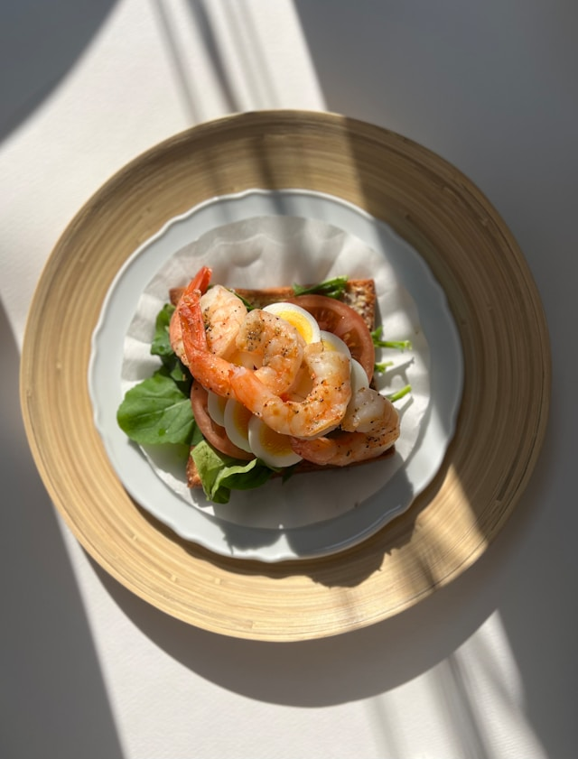

-
닭가슴살 샌드위치
Chicken breast sandwiches
카페 호이의 닭가슴살 샌드위치는 신선한 야채와 부드러운 닭가슴살로 건강함과 맛을 동시에 담았습니다. 통밀빵 사이에 담긴 촉촉한 닭가슴살과 풍성한 재료들이 완벽한 균형을 이루며 가벼운 한 끼로도 충분합니다.
저지방 닭가슴살과 신선한 재료만을 사용해 매장에서 정성껏 준비했습니다. 깔끔하고 담백한 맛으로 누구나 부담 없이 즐길 수 있는 웰빙 메뉴입니다.
-
하몽 부르스케타
Jamon bruschetta
고소한 바게트 위에 신선한 토마토 살사와 크리미한 리코타 치즈, 그리고 스페인의 정통 하몽을 얹은 이탈리아 스타일의 오픈 샌드위치입니다. 하몽의 풍미와 신선한 재료의 조화가 완벽한 한 입을 선사합니다.
하몽은 스페인에서 전통적으로 염장 후 숙성시킨 돼지 뒷다리로, 깊고 짭짤한 풍미가 특징입니다. 신선한 토마토와 리코타 치즈는 하몽의 짠맛을 균형 있게 잡아주며, 가볍게 구운 바게트는 식감을 더해줍니다.
-

새우 오픈 샌드위치
Shrimp open sandwich
바삭하게 구운 바게트 위에 탱글한 새우와 아보카도 무스를 얹고, 상큼한 허브 드레싱으로 마무리한 산뜻한 오픈 샌드위치입니다. 신선하고 조화로운 맛이 한 입에 담겨 있습니다.
탱글탱글한 새우는 담백하게 조리되어 아보카도의 크리미함과 자연스러운 조화를 이룹니다. 허브 드레싱과 약간의 레몬즙은 샌드위치에 산뜻함을 더하며, 가볍고 세련된 브런치 메뉴로도 제격입니다.
-
연어 포케
Salmon poke
신선한 생 연어와 아보카도, 다양한 채소를 조화롭게 담아낸 하와이안 스타일의 건강한 한 그릇 요리입니다. 고소한 참기름 향과 상큼한 드레싱이 어우러져 가볍고도 만족스러운 맛을 선사합니다.
포케는 하와이 전통 요리로, 신선한 해산물과 다양한 토핑을 얹어 즐기는 건강한 한 끼입니다. 부드러운 연어와 바삭한 채소, 쫄깃한 밥이 함께 어우러져 식감과 풍미를 동시에 만족시킵니다. 가볍게 즐길 수 있는 웰빙 메뉴로, 트렌디한 식사를 찾는 분들에게 추천드립니다.
-
호이 버거
HOI Burger
카페 호이의 시그니처 호이 버거는 신선한 재료와 풍부한 풍미로 한 입 가득 만족을 선사합니다. 부드럽고 촉촉한 번, 육즙 가득한 패티, 그리고 신선한 야채가 완벽한 조화를 이루며 잊을 수 없는 맛을 제공합니다.
매장에서 직접 구운 번과 엄선한 재료로 만들어 매일 신선함을 유지합니다. 간단한 식사부터 든든한 한 끼로, 호이 버거는 커피와 함께 즐기기에 딱 좋은 선택입니다.
-
감자튀김
Fries
카페 호이의 감자튀김은 바삭한 식감으로 누구나 좋아할 완벽한 사이드 메뉴입니다. 신선한 감자를 사용해 정성껏 튀겨내, 한 입 먹을 때마다 느껴지는 고소함과 풍미가 일품입니다.
갓 튀겨낸 감자튀김은 마요네즈와 함께 즐길 수 있어 더 풍성한 맛을 제공합니다. 커피나 호이 버거와 함께 곁들여 최고의 조합을 경험해보세요!